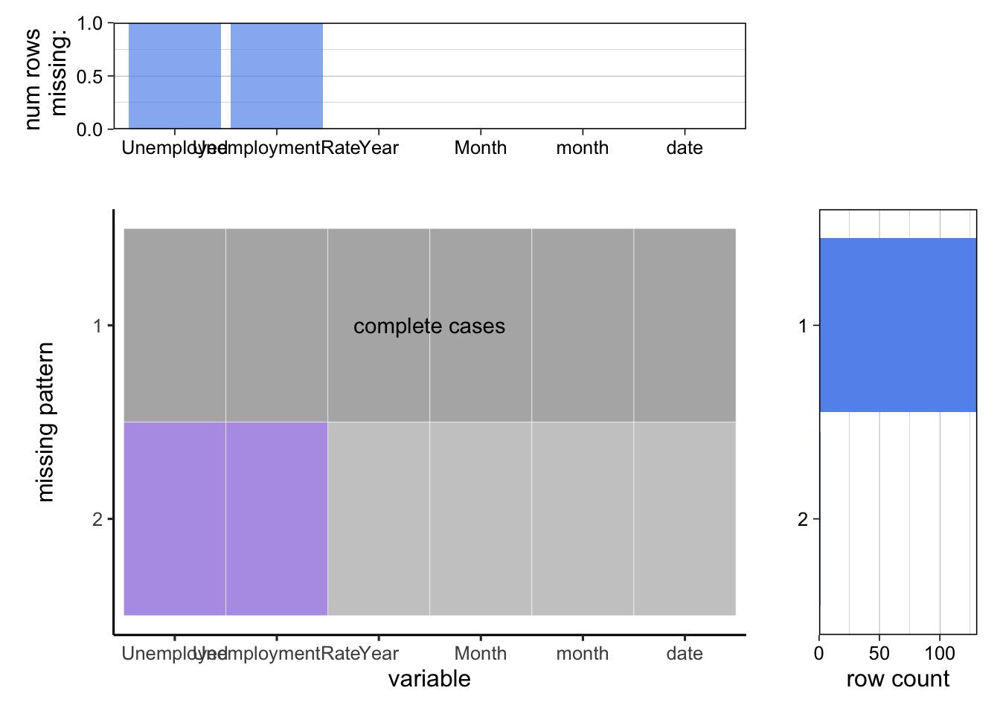
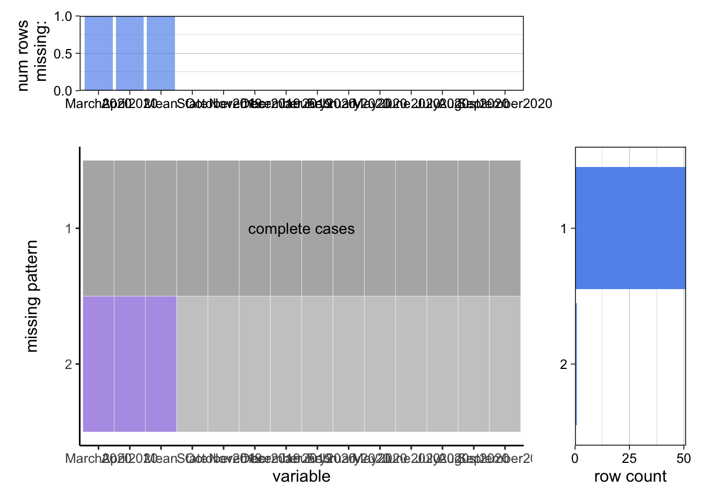
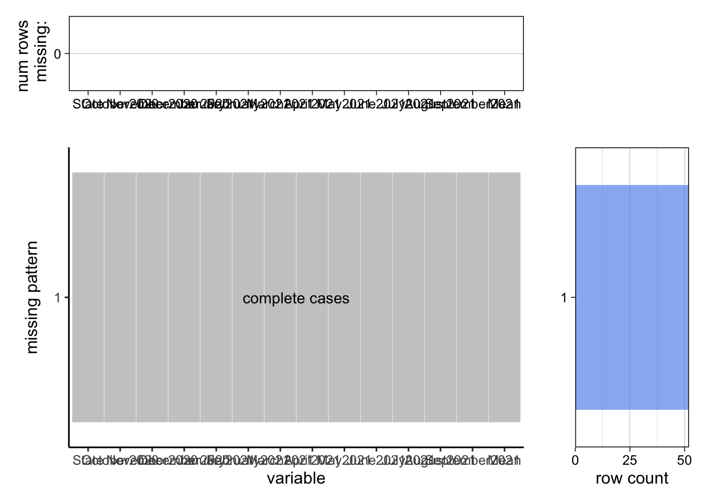
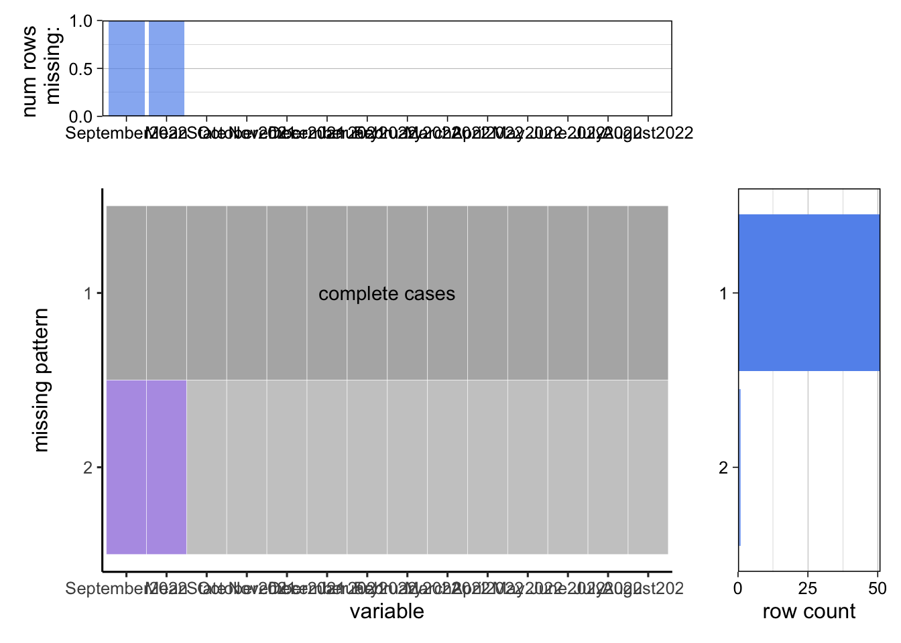
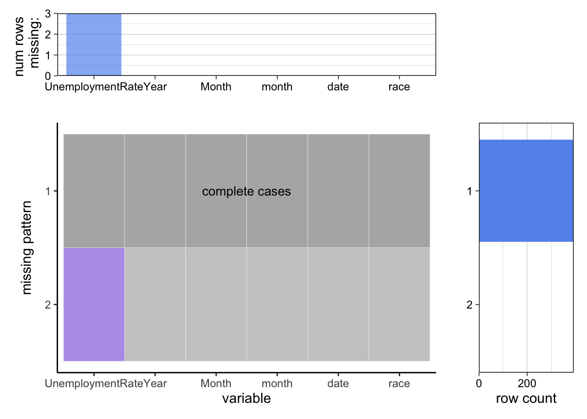
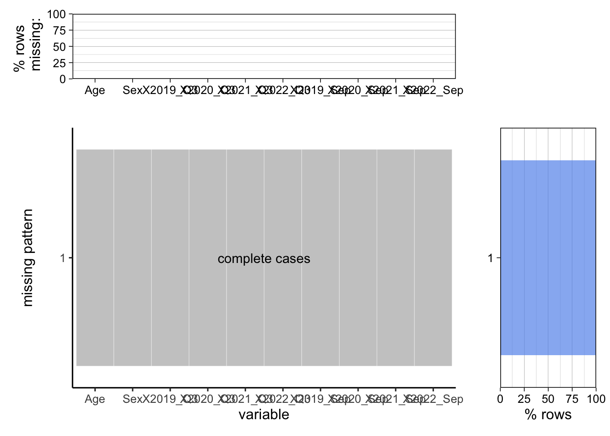
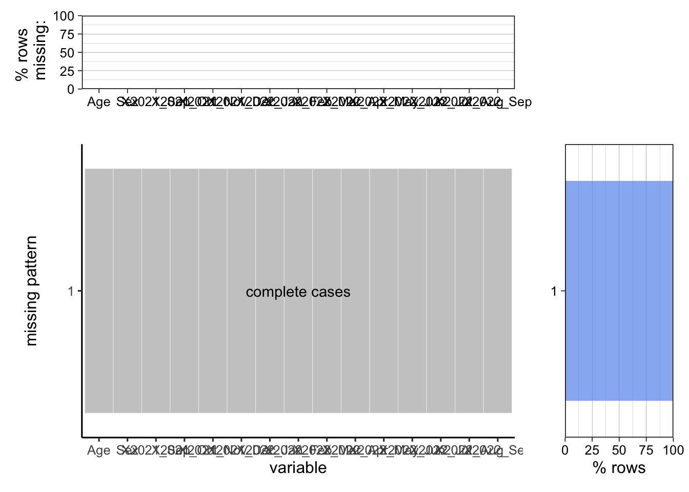

Chapter 3 Data
To comprehensively investigate the unemployed situation after the Covid-19 pandemic, we will visualize the unemployed population and unemployment rates from the following five different perspectives:
- Monthly unemployment rate trend
- Unemployment rates of each state
- Unemployment rates of different races
- Unemployment situation of different-aged men and women
- Relationships among the unemployed population, GDP, and CPI
Each section corresponds to one or multiple separate dataset(s), so we will discuss the data source, data cleaning and transformation process, and missing value analysis regarding each part separately.
3.1 Sources
As described above, we will focus on the above five aspects regarding unemployment, including monthly trends, geographical distribution, race, age, and sex-related differences, and relationships to macroeconomic factors. We chose these aspects because we think they can capture most characteristics of the unemployed situation after the Covid-19 pandemic in the U.S. To fully investigate it, we have decided to utilize the data from the U.S. Bureau of Labor Statistics and the U.S. Bureau of Economic Analysis. We consider these data sources because they are the U.S. official departments that provide officially valid data.
Next, we will discuss these data sources regarding each aspect in detail.
3.1.1 Monthly Unemployment Rate
Firstly, we will visualize the time series data of seasonally adjusted unemployment rates for each month in the United States from January 2012 to November 2022. The data is collected and published by the U.S. Bureau of Labor Statistics on a monthly basis. The unemployed information is collected from the Current Population Survey (CPS), a household survey about the employment situation administered by the U.S. Census Bureau on a sample of 60,000 U.S. households. We chose this data source because of its reliability and authority. Following the methods described in Section 2.2, we got a table summarizing the monthly unemployment rates from January 2012 to November 2022. This table includes 13 columns and 11 rows. The 13 columns encompass year and 12 months, respectively, while the 11 rows contain unemployment rate data for each month from 2012 to 2022. The column “Year” is in the integer type, and the other 12 columns containing unemployment rates are in the double type. Since it is published by the U.S. official organization, we did not find any unreasonable issues or problems.
3.1.2 Unemployment Rate by State
Secondly, we will visualize the unemployment rates of each state in the U.S., ranging from October 2019 to September 2022. This data is collected and administered by the Local Area Unemployment Statistics (LAUS) program under the U.S. Bureau of Labor Statistics. The state unemployment rate is calculated as the sum of two parts: estimates from the Current Population Survey (CPS)——the source of national unemployment rates——and real-time estimates controlled by models. These models reflect current and historical data from the CPS, the Current Employment Statistics (CES) survey, and state unemployment insurance (UI) systems. We relied on this data because of its reliability and authority. Since each page of the U.S. Bureau of Labor Statistics contains a table for a specific month, we finally got 36 tables. Each table has two columns, states and corresponding unemployment rates, and 52 rows, each of which represents a state or region. The state column contains character data, while the unemployment rate column includes double data. A minor problem we discovered is that it consists of 52 states or regions, not typically 50 states in the U.S., and Puerto Rico sometimes do not have any record while other states all have complete data.
3.1.3 Unemployment Rate by Race
Thirdly, we will investigate how unemployment rates differ among different races: Asian, White, and Black, from September 2021 to September 2022. The data is collected and maintained by the U.S. Bureau of Labor Statistics, originating from the Current Population Survey (CPS). This survey, administered by the U.S. Census Bureau, investigates the employment situation by sampling 60,000 households. We chose this data source because of its reliability, authority, and easy accessibility. We obtained three tables, each of which records the monthly unemployment rates for White, Asian, and Black, respectively, ranging from January 2012 to November 2022. Each table includes 13 columns and 11 rows. The 13 columns are “Year” and 12 months, respectively, while the 11 rows are unemployment rate data for each month from 2012 to 2022. The column “Year” is in the integer type, and the other 12 columns containing unemployment rates are all in the double type. Since it is published by the U.S. official organization, we did not find any unreasonable issues or problems.
3.1.4 Unemployment Situation by Age and Sex
Fourthly, we will investigate the unemployment situation concerning age and sex across different periods. The Division of Labor Force Statistics under the Bureau of Labor Statistics collects and maintains the data. This data was estimated through the household survey given by the Bureau of Labor Statistics based on 60,000 household data sampled by the U.S. Census Bureau. We relied on this data source because of its reliability and authority. We finally had four tables. Two tables are about the unemployed population and unemployment rates, each of which includes 16 columns and 21 rows. The 16 columns include age (character), sex (character), 13 months from September 2021 to September 2022 (integer for unemployed population data and double for unemployment rate data), and the row mean (double). Each row represents a series of unemployment data for a specific-aged and sex group. The other two tables are also about the unemployed population and unemployment rates, which include 10 columns and 21 rows. The 16 columns include age (character), sex (character), unemployed data for September 2019, 2020, 2021, and 2022, and unemployed data for 2019 Q3, 2020 Q3, 2021 Q3, and 2022 Q3 (integer for unemployed population data and double for unemployment rate data). Each row contains the unemployment data a specific-aged and sex group. Since it is published by the U.S. official organization, we did not find any unreasonable issues or problems.
3.1.5 Relationships among Unemployed Population, GDP, and CPI
Finally, we will explore the relationships among the unemployed population, GDP, and CPI from January 2012 to October 2022. The Bureau of Labor Statistics collects the unemployed population data through the Current Population Survey (CPS), a household survey about the employment situation administered by the U.S. Census Bureau on a sample of 60,000 U.S. households. The GDP data comes from https://ycharts.com, which uses “Macroeconomic Advisors” research results as their data source. Macroeconomic Advisers’ GDP is an indicator of actual aggregate output that is conceptually consistent with real Gross Domestic Product (GDP), using calculation and aggregation methods comparable to the official GDP from the U.S. Bureau of Economic Analysis. In this way, we can view the monthly GDP index. The CPI data is maintained by the U.S. Bureau of Labor Statistics (BLS) and calculated by sampling prices of goods from 6,000 households and 22,000 retail stores each month in 75 major regions in the United States. We chose the unemployed population and CPI data from the Bureau of Labor Statistics because of their reliability and authority. However, we chose the GDP data from https://ycharts.com because it contains monthly GDP data rather than quarterly-updated data from other sources, which is easier to access. The unemployed population and CPI tables both have 13 columns and 11 rows. The 13 columns consist of “Year” and 12 months, respectively, while the 11 rows contain unemployment and CPI data for each month from 2012 to 2022. The column “Year” is in the integer type, and the other 12 columns are in the double type. The GDP table consists of 130 records and 2 columns: Date and GDP value. The “Date” column is in the character type, while the GDP value is in the double type. We did not find any unreasonable issues or problems through our exploration.
3.2 Cleaning / transformation
In this section, we will discuss how we cleaned and transformed the original datasets into multiple tidy datasets for further visualization regarding these five tasks. The detailed code is included in the Results part.
3.2.1 Monthly Unemployment Rate
First, we retrieved data for unemployment rates online and noticed that it needed to be tidy. We used the pivot_longer() function, and it became a data set with each row as the unemployment rate for a month in a year. Next, we created a date variable from the Year and Month abbreviation by the make_date() function so that we could visualize the time series. Also, we found that there was a missing value in our data set, that is, the unemployment rate in December 2022, and we removed it.
3.2.2 Unemployment Rate by State
We intend to visualize the unemployment rates of each state in the United States from October 2019 to September 2022. The unemployment rate data for each state of a specific month is included in a table across multiple pages. We downloaded these pages as “.html” files and utilized the rvest package in R to extract the tables from each page. The unemployment rate data of each month corresponds to a table, and finally, we got 36 tables. We divided these data according to time into 3 groups: from October 2019 to September 2020, from October 2020 to September 2021, and from October 2021 to September 2022. We horizontally merged these 36 tables as 3 dataframes, each corresponding to a defined group. We replaced the “-” symbol with NA and transformed each character column into a double column for calculation. In each group, we computed the mean of the unemployment rates within these 12 months for each state. Notice that there are several missing values for unemployment rate data for Puerto Rico, so we decided to remove this state. Then we formed a new dataframe containing four columns: state and corresponding mean values from these three dataframes to visualize the Cleveland dot plot. We also used the pivot_longer() function to transform it into tidy data to visualize the histogram. For spatial data visualization, we merged this dataframe with the geographical data, such as the longitude and latitude of each state.
3.2.3 Unemployment Rate by Race
First, we retrieved data for each of the three races online and noticed that it was not tidy. We used the pivot_longer() function, and it became a data set with each row as the unemployment rate for a month in a year. Second, we created a date variable from the Year and Month abbreviation by the make_date() function so that we could visualize the time series. Also, we created a race variable. We did the same above steps for data of all three races and then combined the data sets together horizontally with the rbind() function.
3.2.4 Unemployment Situation by Age and Sex
There are four different data frames used to show the unemployment condition among different age intervals. Two of them are averaged unemployment population and unemployment rate data in the third quarters from 2019 to 2022. Two of them are monthly unemployment population and unemployment rate data from September 2021 to September 2022. As the original data from the Bureau of Labor Statistics has been Excel sheets categorized by age and sex, we only need some trivial transformation to help us plot corresponding charts.
For stacked bar charts, we transform our data frames into tidy data with the pivot_longer() method. We changed the year index in the columns into a variable Year so that we can plot four different facets of stacked bar charts based on four different years. We also filtered out the data that represent the sum of unemployment population/rate for both genders as we only need unemployment data for Males and Females for our bar charts.
For the heatmap, we used the monthly unemployment rate data from September 2021 to September 2022 and transformed our data frames into tidy data with the pivot_longer() method. We changed the month index in the columns into a variable Month so that we can plot the heatmap by setting months as its x-axis. As Gender is not in our consideration for this graph, we left the unemployment rate data for both genders in total using the filter function.
For mosaic plots, we used the monthly unemployment rate data from September 2021 to September 2022 and transformed our data frames into tidy data with the pivot_longer() method. To better show the frequency among different groups, we divided these data into two age intervals (less than 35 years old or more than 35 years old). We also defined three groups of unemployment population “low” (< 7,000,000 people), “medium” (>= 7,000,000 people & < 17,000,000 people), and “high” (> 17,000,000 people) unemployment population. To calculate the frequency of each group, we group the data by Sex, age_category, and category to see how many groups are in each category.
3.2.5 Relationships among Unemployed Population, GDP, and CPI
We intend to visualize the unemployed population, GDP, and CPI data from January 2012 to October 2022. The unemployed population, GDP, and CPI data can be exported as “.csv” or “.xlsx” files directly, but they are not in a tidy form. We utilized the pivot_longer() function to transform these three dataframes into tidy data, each of which contains three columns: Year, Month, and Value (i.e., unemployed population or GDP or CPI values). Since we will focus on the data until October 2022, we removed the unemployed population and CPI data corresponding to November 2022 and December 2022, which are unavailable now. Then we merged the three dataframes of tidy data form into a new dataframe based on the year and month for plotting the parallel coordinate plot. We split these data into two groups: “Pre-Covid” and “After-Covid”, and added a new column to show these classes. The “Pre-Covid” refers to the data before 2020 and the “After-Covid” data refers to the data after the beginning of 2020.
3.3 Missing value analysis
In this section, we will analyze and visualize how many missing values are in our datasets for the five aspects mentioned above. We found that for all the datasets, there are only very few rows containing missing values in very few columns. In most cases, only a specific row includes missing values. The common philosophy that we dealt with it is to remove this row directly as it will not influence the completeness of the datasets too much.
We also discovered that missing values only resulted from two special cases. Firstly, the missing value always appears in the data corresponding to December 2022, which is unavailable without doubt. The appearance of this kind of missing value originates from the untidy form of data. Secondly, for unemployment rates for each state, Puerto Rico sometimes may contain NA data even on the official website. We chose to ignore this special region and focus on other areas.
Below is the distribution of missing values in the datasets for the five tasks.
3.3.1 Monthly Unemployment Rate

As the above graphs present, there is only one row missing in two columns. After we investigate, we find that the missing data is for December 2022, but the unemployment data is still unavailable now. Hence, the missing data does not make sense, and we can simply remove it for further time series visualization.
3.3.2 Unemployment Rate by State

According to the above three groups of graphs, from October 2019 to September 2020, there is one missing row in three different columns. We found that the missing data comes from the same row, which corresponds to Puerto Rico. There is no missing data from October 2020 to September 2021. Moreover, one missing row appears in two columns from October 2021 to September 2022. We also found that this missing data comes from the Puerto Rico row. These facts indicate that only Puerto Rico may contain missing values. For convenience, we removed the row corresponding to this state for further visualization.
3.3.3 Unemployment Rate by Race

According to the above graphs, this dataset contains three missing data in the “Unemployment Rate” column. We found that these three missing rows correspond to December 2022 for White, Asian, and Black, respectively. The data for December 2022 is unavailable now, and we should remove them. After that, we can use this dataset to visualize the unemployment rates for different races.
3.3.4 Unemployment Situation by Age and Sex

The above four groups of graphs exhibit that there are no missing values within these dataframes, and we can directly use these data for visualization regarding unemployment situation by age and sex.
3.3.5 Relationships among Unemployed Population, GDP, and CPI
As the above graphs show, the dataset containing the unemployed population, GDP, CPI, and “Pre/After-Covid” classes do not have any missing values. This dataset is complete and can be directly used for visualizing the relationship between the unemployed population, GDP, and CPI.